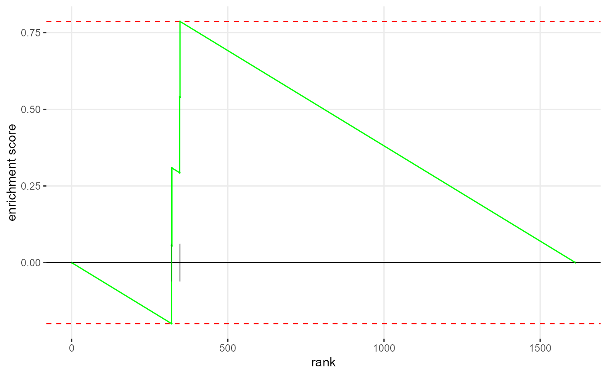

Main function of drug target set enrichment analysis (DTSEA)
DTSEA.RdThe DTSEA function determines whether a drug is potent for a specific disease by the proximity between its targets and the disease-related genes.
Usage
DTSEA(
network,
disease,
drugs,
rwr.pt = 0,
sampleSize = 101,
minSize = 1,
maxSize = Inf,
nproc = 0,
eps = 1e-50,
nPermSimple = 5000,
gseaParam = 1,
verbose = TRUE
)Arguments
- network
The human protein-protein interactome network. It should be or be preconverted before being inputted in DTSEA.
- disease
The disease-related nodes.
- drugs
The drug-target long format dataframe. It includes at least columns with the drug_id and drug_target.
- rwr.pt
The random walk p0 vector. Set it to 0 if you wish DTSEA automatically compute it, or you can provide your predetermined p0 vector.
- sampleSize
The size of a randomly selected gene collection, where size = pathwaySize
- minSize
Minimal set of a drug set to be tested.
- maxSize
Maximal set of a drug set to be tested.
- nproc
The CPU workers that fgsea would utilize.
- eps
The boundary of calculating the p value.
- nPermSimple
Number of permutations in the simple fgsea implementation for preliminary estimation of P-values.
- gseaParam
GSEA parameter value, all gene-level statistics are raised to the power of 'gseaParam' before calculating of GSEA enrichment scores.
- verbose
Show the messages
Value
The resulting dataframe consists of drug_id, pval, padj,
log2err, ES, NES, size, and leadingEdge.
Examples
library(dplyr)
library(DTSEA)
# Load the data
data("example_disease_list", package = "DTSEA")
data("example_drug_target_list", package = "DTSEA")
data("example_ppi", package = "DTSEA")
# Run the DTSEA and sort the result dataframe by normalized enrichment scores
# (NES)
result <- DTSEA(
network = example_ppi,
disease = example_disease_list,
drugs = example_drug_target_list,
verbose = FALSE
) %>%
arrange(desc(NES))
#> Warning: There are ties in the preranked stats (0.81% of the list).
#> The order of those tied genes will be arbitrary, which may produce unexpected results.
# Or you can utilize the multi-core advantages by enable nproc parameters
# on non-Windows operating systems.
result <- DTSEA(
network = example_ppi,
disease = example_disease_list,
drugs = example_drug_target_list,
nproc = 10, verbose = FALSE
)
#> Warning: There are ties in the preranked stats (0.81% of the list).
#> The order of those tied genes will be arbitrary, which may produce unexpected results.
# We can extract the significantly NES > 0 drug items.
result %>%
filter(NES > 0 & pval < .05)
#> # A tibble: 1 × 8
#> drug_id pval padj log2err ES NES size leadingEdge
#> <chr> <dbl> <dbl> <dbl> <dbl> <dbl> <int> <list>
#> 1 DB00112 0.00505 0.0320 0.407 0.729 1.82 9 <chr [4]>
# Or we can draw the enrichment plot of the first predicted drug.
fgsea::plotEnrichment(
pathway = example_drug_target_list %>%
filter(drug_id == slice(result, 1)$drug_id) %>%
pull(gene_target),
stats = random.walk(network = example_ppi,
p0 = calculate_p0(nodes = example_ppi,
disease = example_disease_list)
)
)

# If you have obtained the supplemental data, then you can do random walk
# with restart in the real data set
# supp_data <- get_data(c("graph", "disease_related", "example_ppi"))
# result <- DTSEA(network = supp_data[["graph"]],
# disease = supp_data[["disease_related"]],
# drugs = supp_data[["drug_targets"]],
# verbose = FALSE)